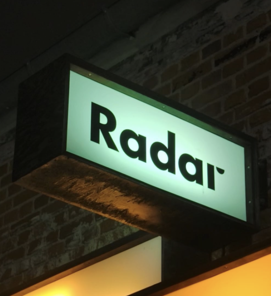
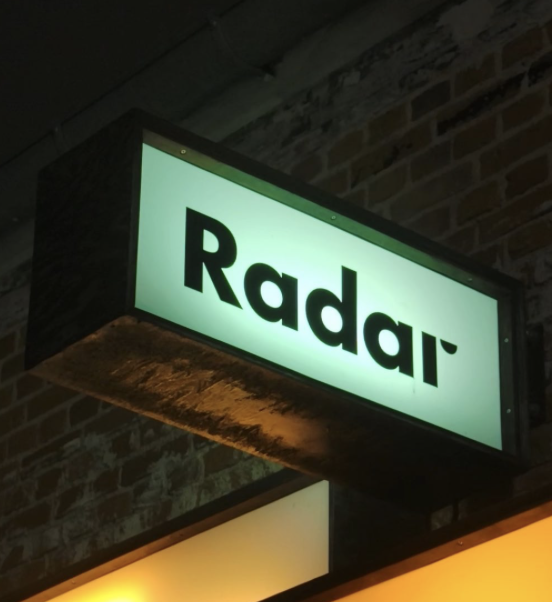
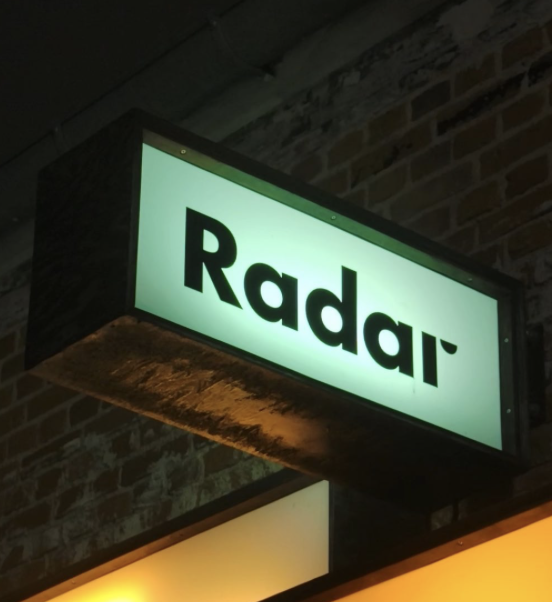
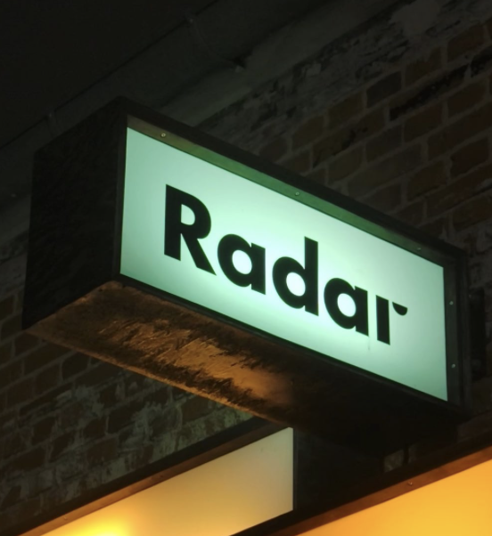

 

Del dine oplevelser fra Radar!
Radar Forum er stedet, hvor vi samler alle, der elsker musik, kunst og unikke oplevelser i Aarhus. Uanset om du er her for at dele dine minder, finde inspiration eller få svar på spørgsmål, er dette forummet for dig!
Har du været til en koncert eller et arrangement på Radar, der gjorde et særligt indtryk på dig? På Radar Forum kan du dele dine tanker, billeder og historier, der har betydet noget for dig.
Radar handler om at skabe og dele fællesskaber – hvad er fællesskaber for dig? Her kan du inspirere andre med dine anbefalinger og fortælle os, hvad der gjorde din oplevelse speciel.
Hvis du har spørgsmål om kommende arrangementer, billetter eller åbningstider, er Radar Forum det perfekte sted at finde svar. Radar-teamet og andre brugere står klar til at hjælpe med information og gode råd, så du får mest muligt ud af dine besøg på Radar.
Er musik noget, der samler os, eller noget, vi oplever individuelt? Del din mening i forummet og deltag i spændende diskussioner om, hvad musik betyder for dig.
Det er også her, du kan møde ligesindede og blive en del af et engageret fællesskab. Kommentér på andres indlæg, deltag i spændende diskussioner, og del praktiske tips til Radar-besøg. Forumet er dit sted til at udveksle ideer, tanker og oplevelser med andre, der brænder for kultur og musik.
Radar Forum er mere end bare et sted at dele – det er en platform, hvor vi sammen kan fejre musikkens og kunstens magi. Her i Aarhus skaber vi de øjeblikke, der gør en forskel, og bygger bro mellem mennesker gennem kultur og kreativitet.
Klik på "Opret Indlæg" og bliv en aktiv del af Radar Forum i dag. Del dine oplevelser, stil dine spørgsmål, og vær med til at skabe et levende, inspirerende fællesskab.
Vi glæder os til at høre fra dig!